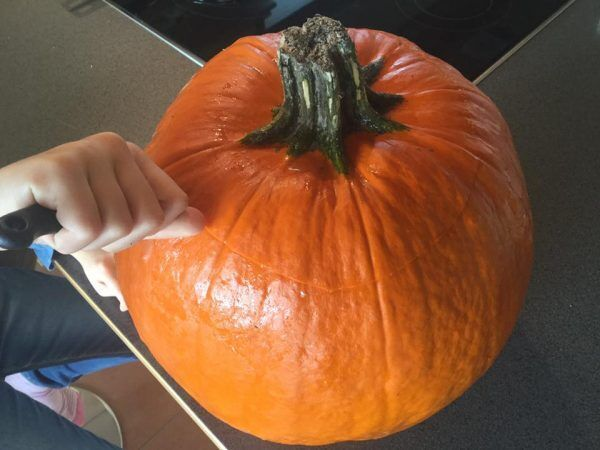
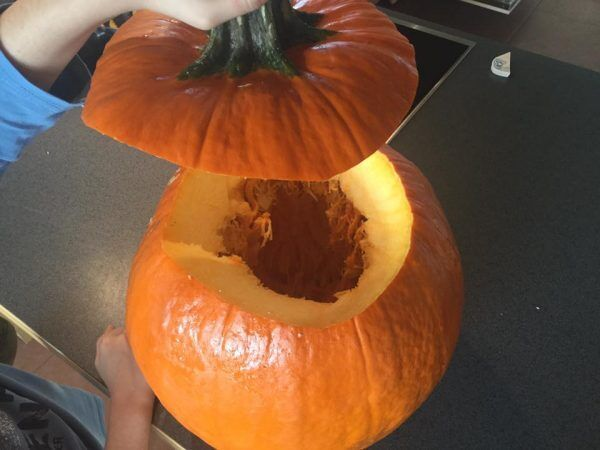
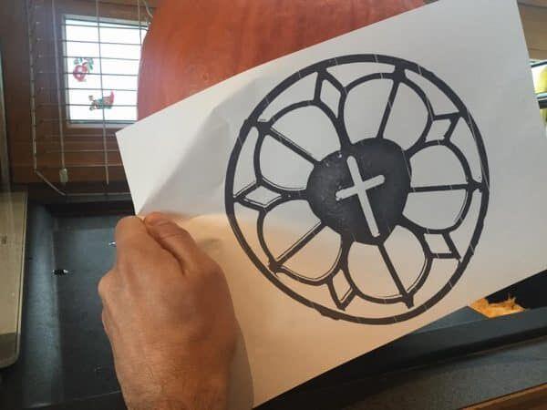
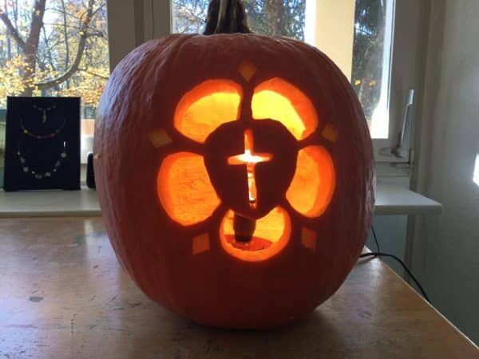

Lutherkürbis - Reformation an Halloween
Das Symbol der Lutherrose ist auch heute noch in vielen Wappen enthalten und wird als Dekoelement genutzt (Quelle: epd/imago)
Aus einer Fotovorlage der Lutherrose wird mit einem Online-Konverter eine Schablone als verlustfrei skalierbare Vektorgrafik erzeugt:
Bastel-Anleitung
Einen Kürbis aufschneiden:

entkernen und aushöhlen:

Schablone aufbringen:

Ausschneiden:
Mit Kerze oder elektrischem Licht ausstatten:

Fertig!
Diese Idee inklusive der Schablone steht unter CC0-Lizenz. Du darfst das Werk kopieren, verändern, verbreiten und aufführen, sogar zu kommerziellen Zwecken, ohne um weitere Erlaubnis bitten zu müssen.